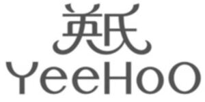

Trade Mark Journal No.2025/031 1 August 2025
WO0000001850852 (12,20,24,25,28)
Office of origin: China
Date of International Registration:23 December 2024
Date of designation in the UK:
23 December 2024

- Class 12
- Bicycles; aerial conveyors; two-wheeled trolleys; pushchairs; pushchair hoods; baby carriages; trolleys; pucker luggage barrow; casters for trolleys [vehicles]; light stroller; sleighs [vehicles]; photography drones; recreational jet boats; electric vehicles; cycles; cable cars; carts; child safety seat for vehicles; child safety seat for cars; fitted pushchair mosquito nets.
- Class 20
- Infant walkers; cots for babies; high chairs for babies; furniture; mattresses; bassinets; bamboo arts and crafts; nameplates, not of metal; decorations of plastic for foodstuffs; beds for household pets; identification bracelets, not of metal; funerary urns; reusable baby changing mats; pillows; straw mattresses; cushions.
- Class 24
- Cloth; non-woven textile fabrics; wall hangings of textile; felt; towels of textile; face towels of textile; bedsheets; pillowcases; pillow towels; terry cloth bed covers; mosquito nets; bed covers; quilt covers; covers [loose] for furniture; khadag; flags of textile or plastic; shrouds; bed linen; crib sheets; children's towels; bath towels; sleeping bags; sleeping bags for babies; cotton fabrics; household linen.
- Class 25
- Clothing; hosiery; gloves [clothing]; belts [clothing]; underwear; pyjamas; children's clothing; layettes [clothing]; babies' pants [underwear]; shoes; hats; short scarf; shower caps.
- Class 28
- Electronic game devices for children's teaching; toys; playing cards; archery implements; swimming pools [play articles]; swim rings; weight arm bands [sports articles].
BUDDinG Group Co., Ltd
Representative: Tahota (Beijing) Law Firm, Room 1206, 1207 Tower A,, Ocean International Center,, 56 Dongsihuan Zhonglu,, Chaoyang District, 100025 Beijing, CHINA